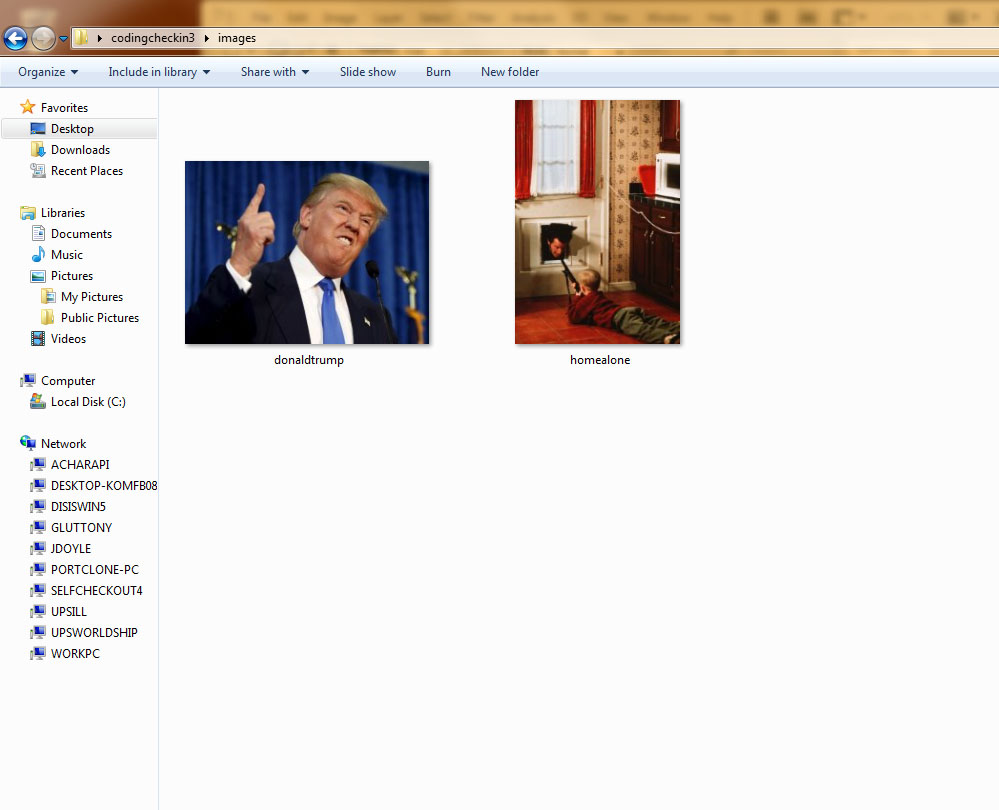
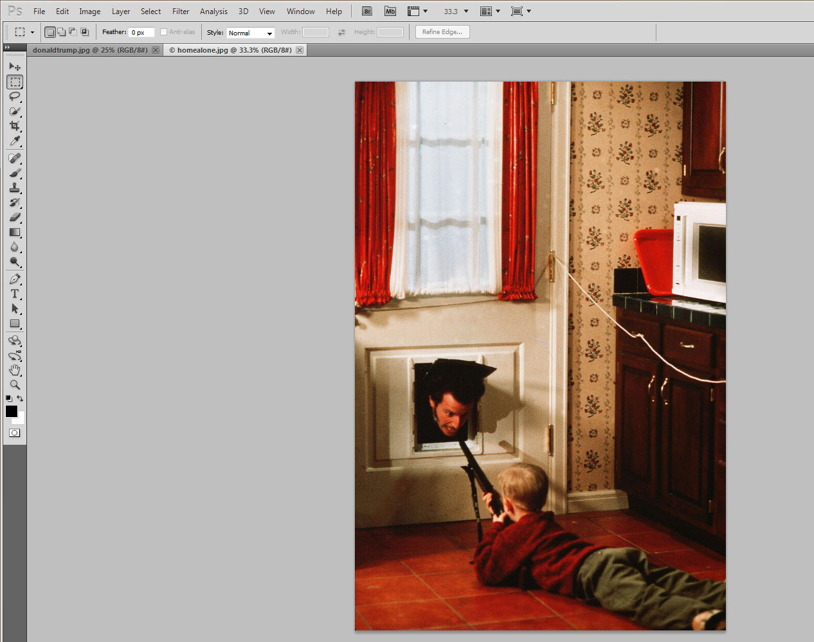
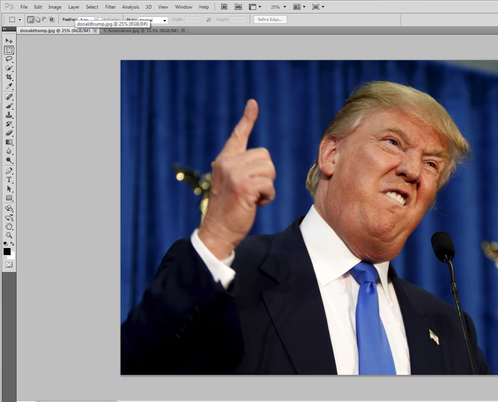
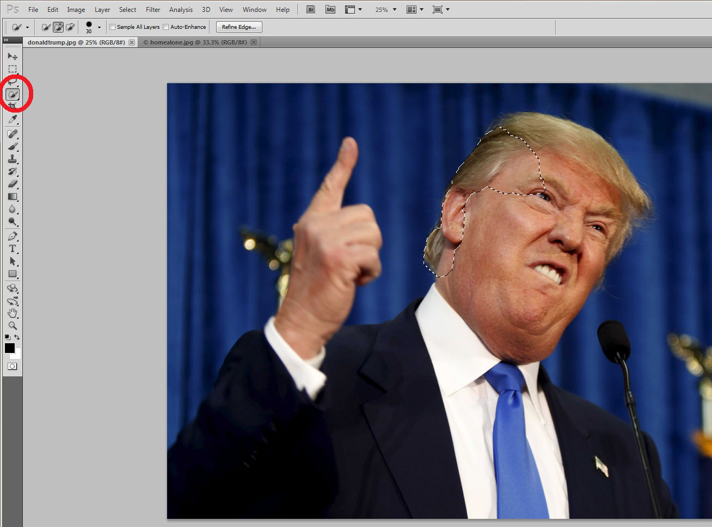

How it all works
Steps:
- Find, and save, high quality images of your subject (the image you wish to) and the background you wish to set it in. 
- Next, open your images in Photoshop.  
- Crop your subject with the "Quick Selection" tool by holding the right mouse button around the area you wish to crop (it will highlight the relative area you need). 
- Right click the selected area (as denoted by a dotted lining) and select the "Layer via Copy" to create a new layer for the section you wish to crop.
- Next, drag the layer you just made to your background image (if it's too big, don't worry, we will resize it)
- Resize, blend, and rotate the new layer4 (as needed) to make it look as natural to the background layer you wish to place it. Then, save the image under a ".jpg" format so that you can send it to your friends.


Donald Trump 2016 campaign